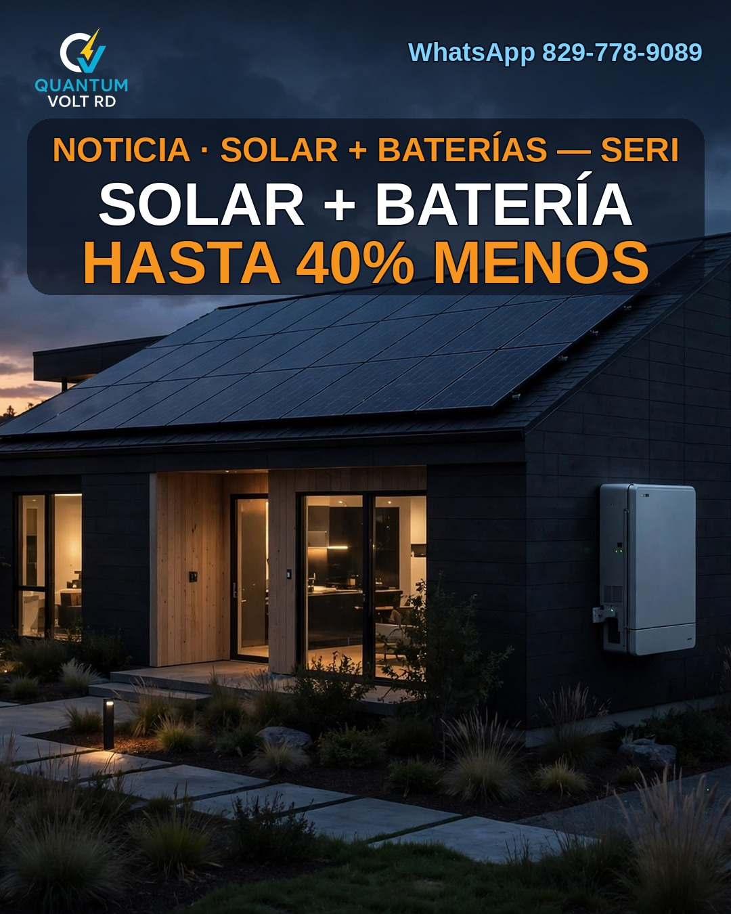

Noticia · 14 de noviembre de 2026
Solar + baterías podrían recortar hasta 40% el costo del sistema eléctrico en 2030
14 de noviembre de 2026 · Energía solar · Baterías

Combinar paneles solares, baterías y un aumento coordinado del consumo eléctrico podría reducir hasta un 40% los costes totales del sistema eléctrico durante la década de 2030, según un informe del Schneider Electric Research Institute (SERI) publicado en noviembre de 2026. El estudio simuló 40.500 escenarios con distintas combinaciones de costes de instalación solar, almacenamiento y funcionamiento de las redes.
El 40% es el potencial; con los costos de hoy ya sería ~10%
Con los costes medios actuales, una configuración optimizada recortaría alrededor de un 10% los gastos totales del sistema. El 40% es el potencial si los precios de paneles y baterías evolucionan según las proyecciones para la próxima década, un beneficio equivalente a alrededor del 0,8% del PIB mundial.
La clave: guardar el excedente del mediodía para la noche
La clave no es solo generar más: las baterías guardan el excedente del mediodía para usarlo en la noche y en las horas pico, y la electrificación —vehículos eléctricos, bombas de calor— debe crecer coordinada con las renovables y el almacenamiento. El estudio se centró en recursos energéticos distribuidos: paneles fotovoltaicos en edificios, baterías domésticas, vehículos eléctricos y sistemas inteligentes de gestión energética.
La advertencia: elegir mal el almacenamiento sale caro
El propio estudio advierte que una elección inadecuada del almacenamiento podría elevar los costes totales hasta un 35% por encima del nivel de referencia. Ni el cable ni la batería se eligen a ojo: el dimensionado correcto es lo que convierte el ahorro potencial en ahorro real.
Qué significa para tu casa o negocio
Es exactamente lo que instalamos: en Quantum Volt RD te ponemos tu sistema solar con baterías y tu hogar inteligente, dimensionado para tu casa, para que el ahorro sea real y no solo una promesa.
Cotiza tu sistema solar con baterías por WhatsApp: 829-778-9089Fuentes
- Gizmodo en Español (14 de noviembre de 2026): La combinación de energía solar y baterías podría transformar el sistema eléctrico europeo para 2030
← Volver a la página principal de Quantum Volt RD · Ver todas las noticias →